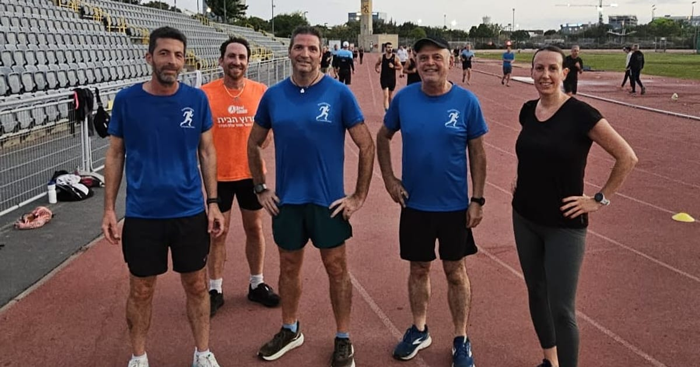
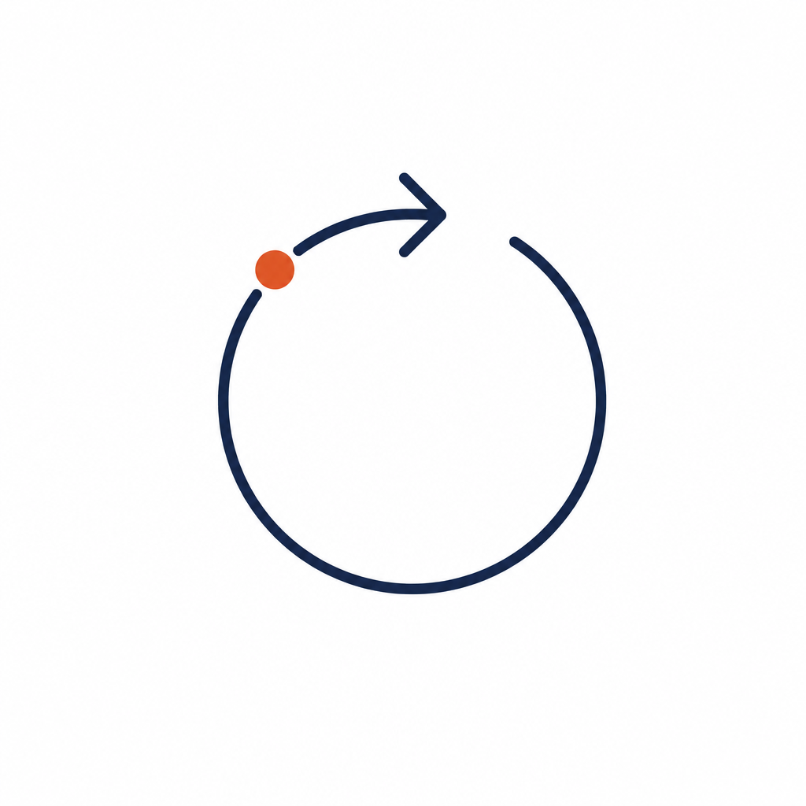
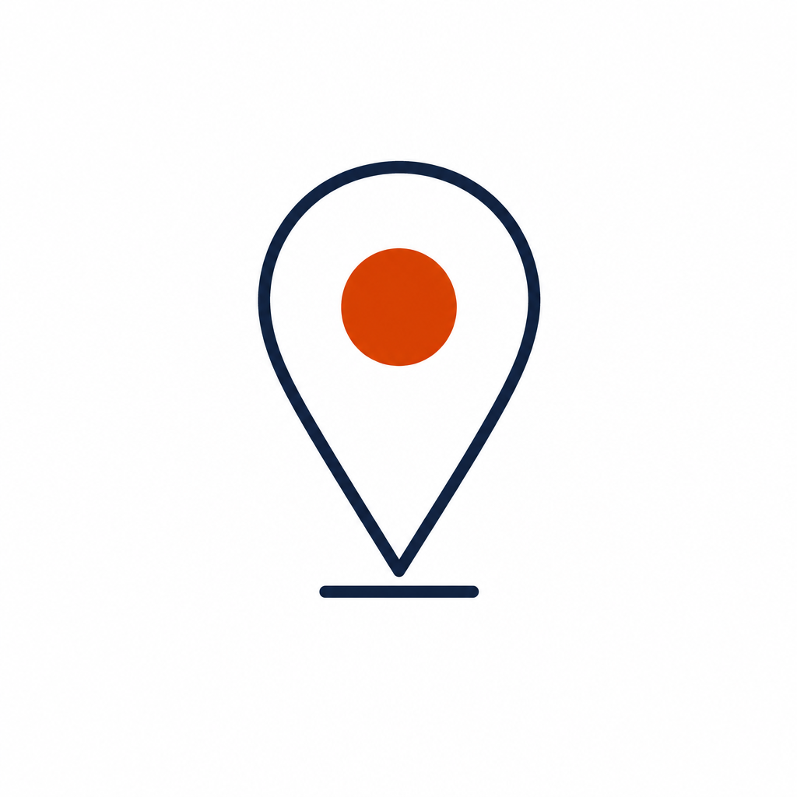
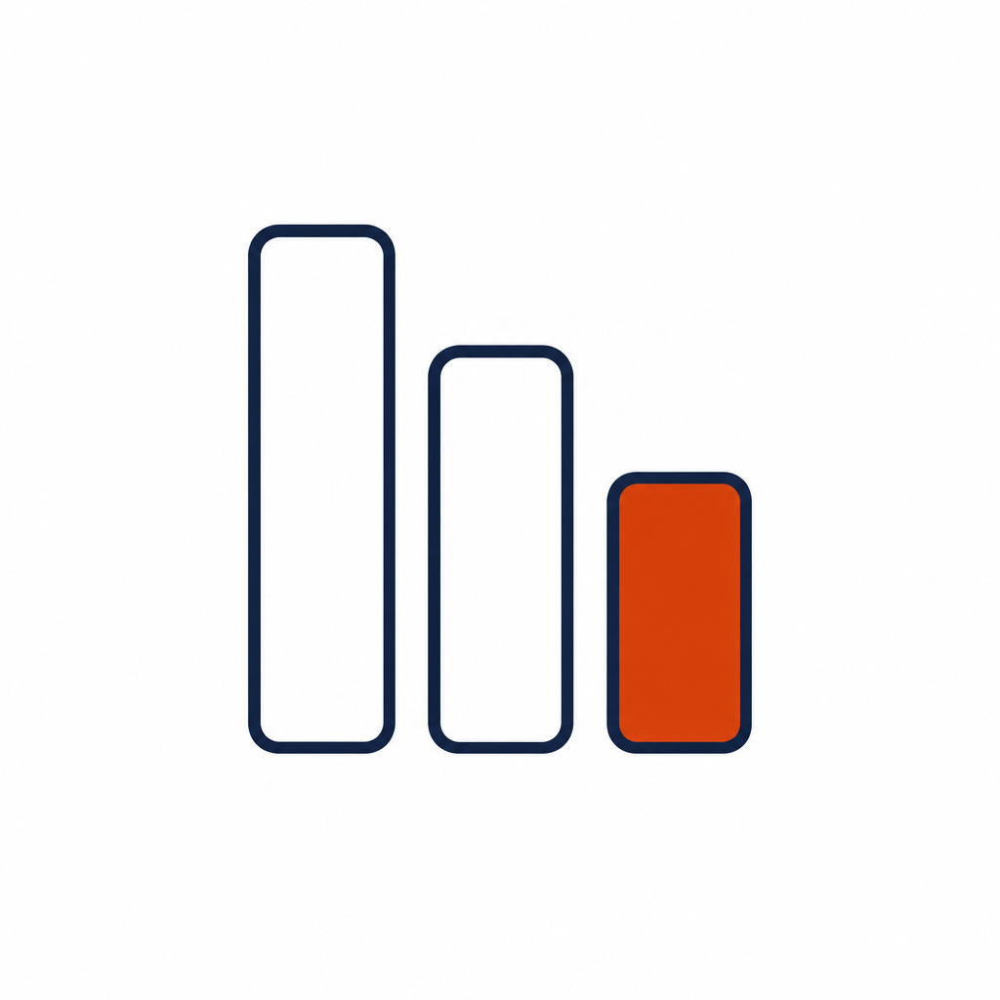
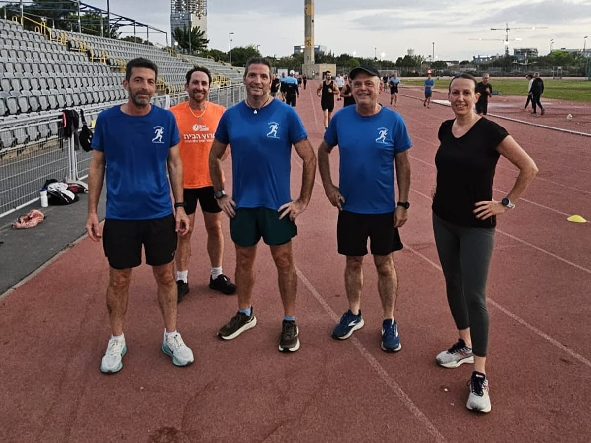
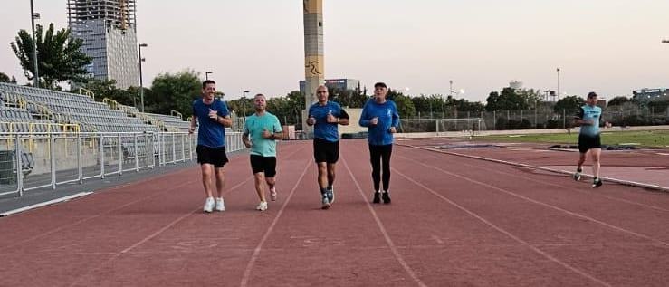
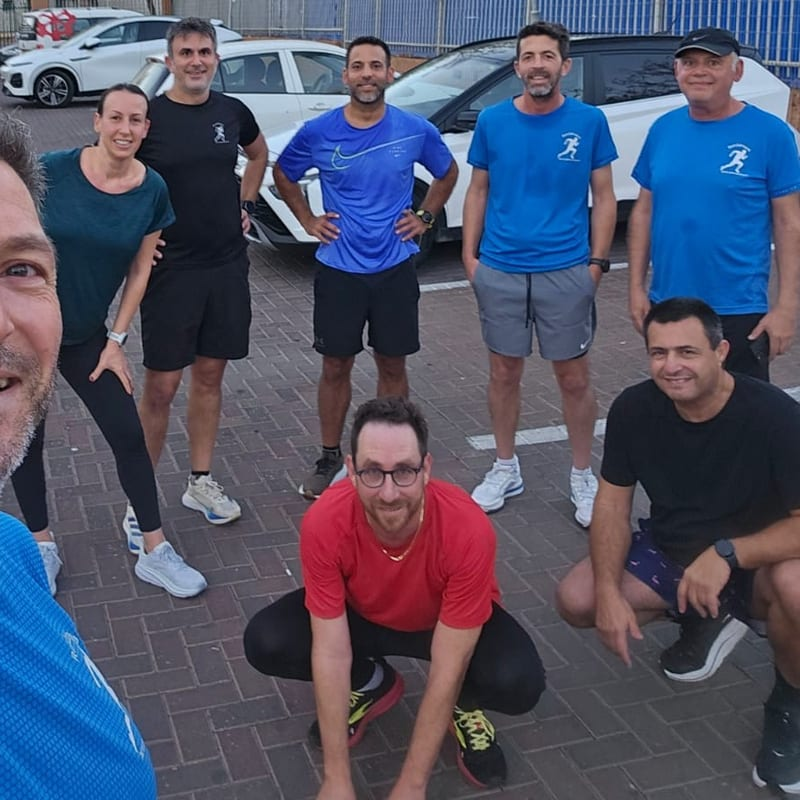
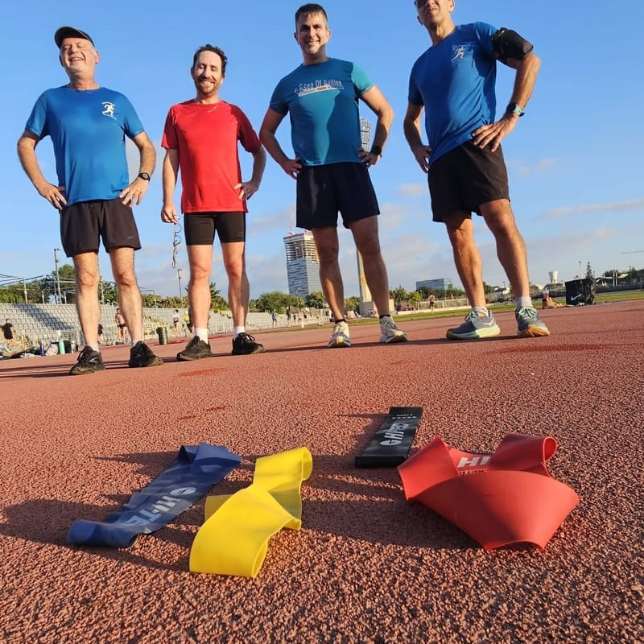
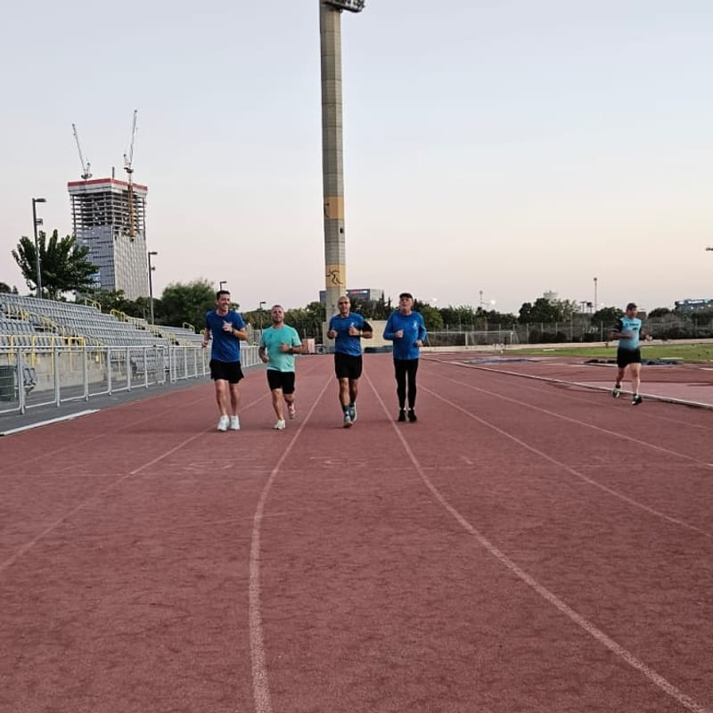
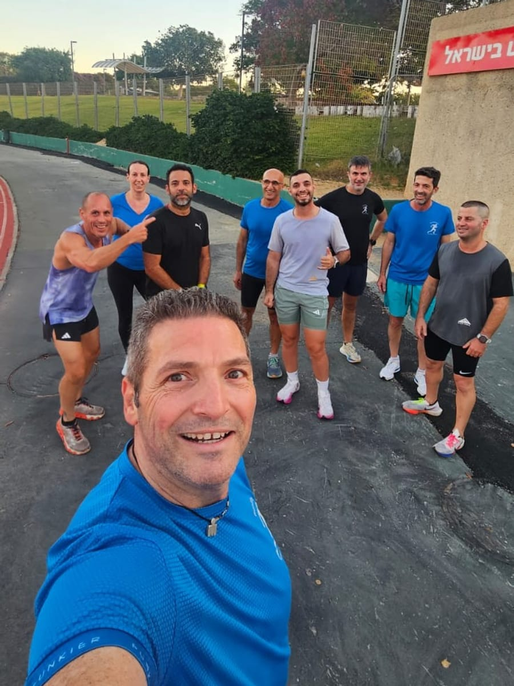

Run2dream · להגשים את חלום הריצה
כאן רצים כל הרמות — מהקילומטר הראשון ועד המרתון
4 בקרים בשבוע במערב ראשון לציון, קבוצה שרצה יחד כבר מעל 10 שנים — וכל רץ חדש מקבל בה את הקצב שלו, לא את הקצב של מישהו אחר.
אימון אחד להתנסות · בלי עלות ובלי התחייבות להמשך
אימון קבוצתי אחד להתנסות, ללא עלות. אין חיוב ואין צורך למסור אמצעי תשלום.
מי שממשיך — 350 ₪ לחודש (כולל מע"מ), ללא התחייבות.
אתם לא צריכים להיות רצים כדי להצטרף. אתם צריכים בוקר אחד שבו אתם מגיעים.
ב-Run2dream רצים יחד כבר מעל 10 שנים במערב ראשון לציון — קבוצה שיש בה מי שרץ מרתונים, ויש בה מי שבשבוע שעבר רץ בפעם הראשונה בחיים. שניהם יוצאים לאותו בוקר, וכל אחד מקבל את הקצב, ההנחיה והליווי שמתאימים לו.
האימון הראשון שלכם עלינו.
בלי להתחייב, בלי להתאמן קודם בבית, ובלי להתנצל על הכושר שלכם.
- מעל 10 שנים
- 4 בקרים בשבוע
- מערב ראשון לציון
- מתחילים ומנוסים באותה קבוצה
- האימון הראשון עלינו

אימוני בוקר במערב ראשון לציון — מה, מתי, איפה
בשורה אחת: מה, מתי, איפה.
שני · רביעי · שישי · שבת
4 בקרים בשבוע. מגיעים לכמה שמתאים לכם; גם בוקר אחד בשבוע זו התחלה.

05:30–06:30
מסיימים לפני שהיום שלכם בכלל מתחיל. בשבת השעה והמשך נקבעים לפי אופי האימון.

מערב ראשון לציון
כל בוקר במקום אחר, ולפעמים גם על מסלול אתלטיקה. נקודת המפגש נשלחת לכם בוואטסאפ מראש, כך שתמיד תדעו בדיוק לאן להגיע.

קבוצה של כ-10 רצים
מספיק בשביל האנרגיה של קבוצה, ומעט מספיק בשביל שמשה יראה כל אחד.
מעל 10 שנים · כל הרמות, ממי שלא רץ מעולם ועד רצי מרחקים ארוכים · 350 ₪ לחודש (כולל מע"מ), בלי התחייבות. תנאי הצטרפות ותשלום
לא צריך להיות בכושר כדי להתחיל. צריך רק להגיע.
אם אתם קוראים את זה ואומרים לעצמכם "זה בטח לא בשבילי" — הפסקה הבאה נכתבה בשבילכם.

כמעט כל מי שהצטרף לקבוצה הגיע עם אותם שלושה משפטים בראש: "אני אעכב את כולם", "אני לא בכושר", "כולם שם רצים יותר טוב ממני".
אז בואו נסדר את זה עכשיו, לפני שתגללו הלאה:
"אני אעכב את כולם"
לא. הקבוצה יוצאת בקבוצות קצב, וכל אחד רץ עם מי שבקצב שלו. אף אחד לא רודף אחרי אף אחד, ואף אחד לא מחכה לכם בקוצר רוח.
"אני לא בכושר בכלל"
זו בדיוק נקודת ההתחלה שאנחנו מכירים הכי טוב. מתחילים בשילוב הליכה-ריצה, ומעלים רק כשהגוף שלכם מוכן — לא לפי לוח זמנים של מישהו אחר.
"לא רצתי כבר שנים"
הגוף זוכר. השבועות הראשונים נועדו להחזיר אתכם בהדרגה ובזהירות — לא להוכיח כלום.
"אני מבוגר/ת מדי בשביל זה"
בקבוצה רצים אנשים בטווח גילים רחב. הריצה מתאימה את עצמה אליכם, לא הפוך.
"אני אהיה היחיד/ה שלא מכיר/ה אף אחד"
כל אחד ואחת היו חדשים בבוקר הראשון שלהם. מישהו יגש אליכם לפני שתספיקו להרגיש לא נעים.
"זו בטח קבוצה של גברים"
בקבוצה רצים גברים ונשים, מכל הרמות. אתן לא תהיו היחידות.
"אני בכלל לא יודע/ת איפה לרוץ"
וזה בסדר גמור — אתם לא צריכים לדעת. משה בוחר את המקום לכל אימון ושולח אותו מראש. אתם רק מגיעים ורצים.
הדבר היחיד שכן נבקש: אם יש לכם מצב רפואי מוכר או פציעה פעילה — ספרו למשה בשיחה, כדי שנתאים לכם את הבוקר הראשון נכון.
הרף היחיד להצטרפות הוא שתגיעו. את השאר משה בונה אתכם מהנקודה שבה אתם נמצאים היום.
האימון הראשון חינם. בלי כושר מוקדם, בלי התחייבות — פשוט בואו.
לא בטוחים שזה מתאים לכם? כתבו למשה בוואטסאפ (נפתח בכרטיסייה חדשה)
איך נראה אימון בוקר בקבוצה
בשביל שתדעו בדיוק לאן אתם מגיעים — עוד לפני שהגעתם.

-
05:30 — מתאספים
בנקודת המפגש שנשלחה לכם בוואטסאפ ערב קודם. מגיעים כמה דקות לפני, אומרים שלום, וזהו.
-
חימום משותף
כל הקבוצה יחד. זה חלק מהאימון בדיוק כמו הריצה עצמה, והוא נועד להכין את הגוף ולהפחית סיכון לפציעה.
-
רצים בקבוצות קצב
מתפצלים לפי קצב ולפי מטרת האימון. אתם רצים עם אנשים שרצים כמוכם.
-
משה עובר בין הרצים
קבוצה של כ-10 אנשים היא בדיוק הגודל שמאפשר לו לתת לכל אחד תיקון טכניקה, הנחיה אישית ודחיפה קטנה ברגע שצריך אותה.
-
06:30 — מסיימים
שחרור קצר, וכולם ממשיכים ליום שלהם. אתם תגיעו לעבודה אחרי בוקר שכבר עשיתם בו משהו טוב לעצמכם.



כל בוקר במקום אחר.
אין אצלנו לופ אחד קבוע שרצים בו שוב ושוב עד שנמאס. המיקום מתחלף מאימון לאימון — כולם במערב ראשון לציון, ולפעמים גם על מסלול אתלטיקה, כשאופי האימון מתאים לזה.
אתם לא צריכים לתכנן כלום ולא צריכים להכיר את האזור. משה בוחר את המקום, שולח אותו בוואטסאפ לפני האימון, ואתם פשוט מגיעים.
בשבת האימון נבנה סביב המטרה שלכם.
באמצע השבוע האימון הוא שעה, מ-05:30 עד 06:30. בשבת זה עובד אחרת: השעה, המשך ואופי האימון נקבעים לפי המטרה שלכם — מרחק שאתם רוצים להגיע אליו בפעם הראשונה, קצב שאתם רוצים להרגיש בו בנוח, או פשוט ריצה ארוכה ורגועה. זה לא "אימון ארוך" גנרי שכולם עושים אותו אותו דבר.
משך: שעה באמצע השבוע · בשבת לפי המטרה · מה להביא: בגדי ספורט, נעלי ריצה ובקבוק מים. זה הכל.
משה — מדריך ריצות ארוכות מוסמך (מכון וינגייט), אולטרה-מרתוניסט ואיש ברזל
המרחקים שמשה רץ הם לא הרף שלכם — הם הסיבה שאפשר לסמוך עליו.

משה בן מאיר — מדריך ריצות ארוכות מוסמך מטעם מכון וינגייט, אולטרה-מרתוניסט ואיש ברזל. וזה בדיוק למה הוא יודע להדריך גם את מי שרץ היום 300 מטר.
- מדריך ריצות ארוכות מוסמך מטעם מכון וינגייט
- אולטרה 100 ק"מ, 2023 — ולצדו אולטרות במרחקים קצרים יותר
- איש ברזל — IRONMAN המבורג, 2024 — ולצדו חצאי איש-ברזל רבים
- מעל 10 שנים של אימוני בוקר קבוצתיים בשטח
קל להסתכל על השורות האלה ולהגיד לעצמכם "אוקיי, זה בליגה אחרת, זה לא בשבילי". אז שנייה לפני שאתם עושים את זה — שימו לב מה הן באמת אומרות.
מי שרץ 100 ק"מ ומי שסיים IRONMAN מלא עבר בעצמו את כל השלבים שאתם עומדים לעבור: את הריצה הראשונה שנגמרה מוקדם מדי, את הבוקר שבו לא בא לו לקום, את הפציעה הקטנה שחוזרת, ואת הרגע שבו הגוף אומר "מספיק" והראש צריך להחליט. הוא לא קרא על זה — הוא היה שם, שוב ושוב.
ומעל הכל: משה הוא מדריך ריצות ארוכות מוסמך מטעם מכון וינגייט. כלומר מה שהוא נותן לכם בבוקר הוא לא "מה שעבד עליי" — זו הכשרה מקצועית, שיודעת להתאים את האימון לגוף שעומד מולה. בדיוק בגלל זה הוא לא מודד אתכם מול עצמו, אלא מול איפה שהייתם בשבוע שעבר.
- הוא מכיר את הקילומטר הראשון לא פחות מהקילומטר ה-100. מתחילים ומנוסים מקבלים ממנו התייחסות רצינית באותה מידה.
- הסמכה מקצועית, לא רק ניסיון אישי. מדריך ריצות ארוכות מוסמך מטעם מכון וינגייט — עם הכלים לבנות התקדמות הדרגתית ולדעת מתי לדחוף ומתי דווקא להוריד הילוך, כדי לא להעמיס על הגוף יותר ממה שהוא מוכן לו.
- הוא רואה אתכם, גם בקבוצה. בקבוצה של כ-10 רצים ורצות אין איפה להתחבא, וגם אין צורך — כל אחד ואחת מקבלים תשומת לב.
לפני שמתחילים להתאמן, משה מחתים כל רץ על הצהרת בריאות. זה לוקח דקה, וזה חלק מהאופן שבו מתנהלת כאן קבוצה כבר יותר מעשור: ברצינות, ובלי לקצר דרכים על החלקים שחשובים באמת.
רצים מספרים על הקבוצה
הם גם התחילו מבוקר אחד.
"כל אימון חוויה בפני עצמה"
נס ציונה
להגשים את חלום הריצה
"חלומות נועדו להגשים"
ראשון לציון
"אומנם אנחנו לא נפגשים, אבל מאמן אותי מרחוק ברמה שלא אימנו אותי אף פעם"
מושב בצפון
שלושה רצים, שלוש נקודות התחלה שונות — וכולם מתאמנים עם משה.
אימון ניסיון חינם בראשון לציון — איך זה עובד
בואו לבוקר אחד, על חשבוננו. זה כל מה שצריך להחליט עכשיו.
אימון הניסיון הראשון הוא ללא עלות — לא חבילה, לא מנוי, לא התחייבות. בוקר אחד, ואתם תדעו לבד. אנחנו מוכנים לתת אותו בלי לגבות עליו, כי אנחנו יודעים מה קורה לאנשים אחרי הבוקר הראשון.
-
משאירים פרטים או שולחים וואטסאפ
לוקח פחות מדקה.
-
משה חוזר אליכם
שיחה קצרה: מה הרמה שלכם היום, מה המטרה, ואיזה בוקר הכי מתאים לכם.
-
מגיעים לאימון הניסיון
עם בגדי ספורט, נעליים ובקבוק מים. משה מחכה לכם בנקודת המפגש. חותמים על אישור בריאות קצר, ויוצאים לדרך.
-
מחליטים אחרי
לא לפני. רציתם להמשיך? מצטרפים למנוי חודשי של 350 ₪, בלי התחייבות. לא רציתם? נפרדים כידידים, ולא שילמתם שקל.
אימון אחד להתנסות · בלי עלות ובלי התחייבות להמשך
אימון קבוצתי אחד להתנסות, ללא עלות. אין חיוב ואין צורך למסור אמצעי תשלום.
מי שממשיך — 350 ₪ לחודש (כולל מע"מ), ללא התחייבות.
350 ₪ לחודש. בלי התחייבות.
4 בקרים בשבוע, כל שבוע, עם מדריך ריצות ארוכות מוסמך מטעם מכון וינגייט — במחיר קבוע וידוע מראש.
מנוי חודשי
350 ₪ לחודש, כולל מע"מ
- כל 4 אימוני הבוקר בשבוע — שני, רביעי, שישי ושבת
- אימון מלא עם מדריך ריצות ארוכות מוסמך מטעם מכון וינגייט — לא תוכנית שנשלחת במייל
- קבוצה של כ-10 רצים — יחס אישי, לא הרצאה לקהל
- מנוי מתחדש מדי חודש · ללא התחייבות · אפשר להפסיק בכל חודש — החודש ששולם ממשיך עד סופו, ואין תשלום נוסף אחריו
האימון הראשון על חשבוננו — משלמים רק אם החלטתם להמשיך.
אימון קבוצתי אחד להתנסות, ללא עלות. אין חיוב ואין צורך למסור אמצעי תשלום.
אין כאן חבילות, אין מדרגות ואין מחיר שמשתנה לפי כמה שאלות שאלתם בטלפון. 350 ₪ לחודש, וזהו — עם גישה לכל ארבעת אימוני הבוקר של השבוע. המחיר לא משתנה לפי כמה פעמים תגיעו, כך שככל שאתם מגיעים יותר, כל אימון עולה לכם פחות.
מגיעים לכל ארבעת הבקרים בשבוע? המנוי יוצא לכם פחות מ-25 ₪ לאימון.
זה מנוי חודשי מתחדש — לא חוזה שנתי ולא קנס יציאה. אתם נשארים כי הבוקר עובד בשבילכם, לא כי חתמתם.
ללא התחייבות — אפשר להפסיק בכל חודש בהודעה בוואטסאפ, בטלפון או במייל. החודש ששולם ממשיך עד סופו, ואין תשלום נוסף אחריו.
ביטול והפסקת מנוי
לא גרים באזור? 05:30 לא אפשרי בשבילכם?
אותו מדריך. אותו מחיר. פורמט אחר.
אימון ריצה מרחוק עם משה — לרצים שלא יכולים להגיע לבקרים במערב ראשון לציון, ולא מוכנים לוותר על ליווי מקצועי.
לא כל רץ יכול להגיע לראשון לציון ב-05:30 בבוקר. יש מי שגר רחוק, יש מי שהשעה הזו פשוט לא מסתדרת לו עם החיים, ויש מי שרץ במקום אחר בארץ ורוצה שמישהו מקצועי ילווה אותו.
בשביל זה קיים האימון מרחוק. אותו מדריך מוסמך מטעם וינגייט, אותו מחיר — 350 ₪ לחודש (כולל מע"מ), אותו חוסר התחייבות. מה שמשתנה הוא רק הפורמט: אתם רצים איפה שאתם נמצאים, ומשה מלווה אתכם משם.
"אומנם אנחנו לא נפגשים, אבל מאמן אותי מרחוק ברמה שלא אימנו אותי אף פעם"
מה כולל האימון מרחוק
- תוכנית אימונים אישית — נבנית לרמה ולמטרה שלכם.
- משוב על הריצות — משה עובר על מה שרצתם ומתקן תוך כדי.
- שיחות עם משה — כדי לכוון, לשנות ולהתאים לאורך הדרך.
משה בונה לכל רץ מרחוק ליווי אישי שמתאים לרמה, למטרה ולתנאים שלו. המתכונת המדויקת נקבעת בשיחה אתו — כי אימון מרחוק של רץ שמתכונן למרוץ ראשון נראה אחרת מזה של רץ שמכוון לשיפור זמנים.
350 ₪ לחודש · בלי התחייבות · המתכונת נסגרת בשיחה קצרה
מעדיפים לדבר קודם?
מלאו את הפרטים — נרכיב מהם הודעת וואטסאפ מוכנה, היא תיפתח אצלכם, ואתם מחליטים אם לשלוח. משם זו שיחה קצרה עם משה: איפה אתם היום ומה הכי מתאים לכם. את המחיר אתם כבר יודעים, אז אין כאן מה למכור לכם.
שאלות נפוצות על קבוצת הריצה
שאלות שכל רץ חדש שואל (ואתם מוזמנים לשאול עוד).
אני איטי מדי. באמת אפשר להצטרף?
כן, ובלי כוכבית. הקבוצה מתפצלת לקבוצות קצב, ואתם רצים עם אנשים שרצים כמוכם. "איטי" זה יחסי — יש בקבוצה רצים שהתחילו בהליכה-ריצה והיום רצים 10 ק"מ. לא לכולם זה קורה באותו קצב, וזה בסדר גמור — כל אחד מתקדם משלו. הדבר היחיד שאנחנו מבקשים הוא שתגיעו.
מה אם לא אעמוד בקצב באמצע האימון?
זה קורה, וזה בסדר גמור. מאטים, עוברים להליכה, נושמים וממשיכים — זה חלק מהאימון ולא כישלון בו. משה עובר בין הרצים ומתאים את המאמץ בזמן אמת. אף אחד לא נשאר לבד בשטח.
לא רצתי כבר שנים. מאיפה מתחילים?
מהתחלה, בהדרגה ובלי לשרוף שלבים. השבועות הראשונים בנויים על שילוב הליכה-ריצה והעלאה איטית של המאמץ — בדיוק כדי לחזור בהדרגה ובזהירות. הגוף מגיב מהר יותר ממה שאתם חושבים, אבל רק אם לא מזרזים אותו.
מה אם אחסיר אימון?
לא נורא, וזה לא "מבטל" לכם את ההתקדמות. יש 4 אימונים בשבוע — שני, רביעי, שישי ושבת — בדיוק כדי שתהיה גמישות. מגיעים לכמה שמתאים לכם באותו שבוע, והמנוי לא משתנה. מה שקובע הוא ההתמדה, לא הכמות — עדיף פעמיים בשבוע באופן קבוע מארבע פעמים בשבוע אחד ואז הפסקה.
אני צריך/ה להיות בכושר לפני שאני מגיע/ה?
לא. זו הטעות הכי נפוצה — אנשים מחכים "להיכנס קצת לכושר" ואז להצטרף, ובסוף לא מגיעים בכלל. הכושר הוא התוצאה של ההגעה, לא התנאי לה.
מה צריך להביא לאימון הראשון?
בגדי ספורט נוחים, נעלי ריצה ובקבוק מים. זה הכל. לא צריך ציוד מיוחד, שעון או אפליקציה.
באילו ימים ושעות האימונים, ואיפה נפגשים?
אימוני בוקר בימים שני, רביעי, שישי ושבת, בשעה 05:30–06:30. בשבת השעה והמשך משתנים לפי אופי האימון והמטרה שאתם בונים לקראתה.
המיקום מתחלף מאימון לאימון, וכולם במערב ראשון לציון — לפעמים גם על מסלול אתלטיקה, לפי אופי האימון. אין מקום קבוע אחד, וזה בכוונה: ככה לא רצים כל בוקר את אותו הדבר. את נקודת המפגש המדויקת שולחים לכם בוואטסאפ מראש, כך שתמיד תדעו לאן להגיע — גם אם אתם לא מכירים את האזור.
כמה זה עולה?
350 ₪ לחודש (כולל מע"מ), מנוי מתחדש ללא התחייבות — כולל את כל ארבעת אימוני הבוקר בשבוע. המחיר לא משתנה לפי כמה פעמים תגיעו, כך שככל שאתם מגיעים יותר, כל אימון עולה לכם פחות. אימון הניסיון הראשון הוא חינם — משלמים רק אם החלטתם להמשיך.
אני חייב/ת להתחייב לתקופה?
לא. זה מנוי חודשי מתחדש, בלי חוזה שנתי ובלי קנס יציאה. אפשר להפסיק בכל חודש — החודש ששולם ממשיך עד סופו, ואין תשלום נוסף אחריו.
ההפסקה נעשית בהודעה בוואטסאפ, בטלפון או במייל — לפי מה שנוח לכם. החודש ששולם ממשיך עד סופו: אתם ממשיכים להתאמן עד תום החודש שכבר שילמתם עליו, ואין תשלום נוסף אחריו. הפירוט המלא: ביטול והפסקת מנוי.
05:30 בבוקר זה מוקדם מדי בשבילי. יש אופציה אחרת?
מבינים לגמרי, וזו שאלה נפוצה. אימוני הקבוצה מתחילים ב-05:30 בדיוק כדי שתסיימו לפני שהיום מתחיל — אבל אם השעה הזו לא מסתדרת עם החיים שלכם, או שאתם לא גרים באזור, יש אימון מרחוק עם משה: אותו מדריך, אותו מחיר, פורמט אחר. שווה לשאול אותו בוואטסאפ מה מתאים לכם.
כמה אנשים יש באימון?
בערך 10 רצים באימון, והמספר משתנה קצת בין קיץ לחורף. זה בדיוק הגודל שנותן את האנרגיה של קבוצה, ועדיין מאפשר למשה לראות כל אחד ולתת הנחיה אישית תוך כדי.
צריך אישור רפואי?
לפני האימון הראשון תתבקשו לחתום על אישור בריאות קצר — כמה שאלות כן/לא על מצב הבריאות שלכם. זה לוקח דקה, וזה מה שמאפשר למשה להתאים לכם את המאמץ נכון מהבוקר הראשון.
אם סימנתם "כן" באחת השאלות, או אם אתם מטופלים במצב לב, לחץ דם, סוכרת, בעיה נשימתית או פציעה פעילה — מומלץ להתייעץ עם הרופא/ה שלכם לפני שמתחילים, ולהביא אישור. זה לא נועד לעכב אתכם, אלא כדי שנדע איך לבנות אתכם.
אם אתם מעל גיל 40 ולא הייתם פעילים בשנים האחרונות — כדאי לעשות בדיקה אצל רופא/ת המשפחה לפני התחלת פעילות סדירה.
אני לא גר/ה בראשון לציון. אפשר בכל זאת להתאמן עם משה?
כן — אימון מרחוק, באותו מחיר של 350 ₪ לחודש ובאותו חוסר התחייבות. אתם רצים איפה שאתם נמצאים, ומשה מלווה אתכם משם. המתכונת המדויקת נקבעת בשיחה אתו, כי היא נבנית לפי המטרה והתנאים שלכם.
הבוקר הראשון הוא היחיד שקשה
אתם כבר יודעים שאתם רוצים לרוץ. השאלה היחידה שנשארה היא אם מחר בבוקר אתם קמים לבד — או שיש קבוצה שמחכה לכם במערב ראשון לציון.
בואו לאימון ניסיון אחד, על חשבוננו. מהמקום שבו אתם נמצאים היום, בקצב שלכם. ואם תחליטו להמשיך — 350 ₪ לחודש (כולל מע"מ), בלי התחייבות.
אימון קבוצתי אחד להתנסות, ללא עלות. אין חיוב ואין צורך למסור אמצעי תשלום.
מי שממשיך — 350 ₪ לחודש (כולל מע"מ), ללא התחייבות.
מידע משפטי
תנאי הצטרפות ותשלום
מי נותן את השירות
משה בן מאיר, עוסק מורשה 040788036, מערב ראשון לציון. יצירת קשר: 050-868-8425.
מה כולל השירות
- אימוני בוקר בקבוצה — 4 אימונים מודרכים בשבוע, בימים שני, רביעי, שישי ושבת, בשעות 05:30–06:30 (בשבת המשך והשעה משתנים לפי אופי האימון). אין מקום אימון קבוע: המיקום מתחלף מאימון לאימון, כולם במערב ראשון לציון — לפעמים גם על מסלול אתלטיקה — ונקודת המפגש המדויקת נשלחת מראש בהודעת וואטסאפ.
- אימון מרחוק — תוכנית אימונים אישית, משוב על הריצות ושיחות עם משה. המתכונת המדויקת נקבעת בשיחה, לפי המטרה והתנאים של הרץ.
המחיר
350 ₪ לחודש (כולל מע"מ), לכל אחד מהמסלולים. אין דמי הרשמה ואין תשלום נוסף.
תשלום
התשלום מתבצע אחת לחודש, ישירות מול משה. אמצעי התשלום נקבע בתיאום אתכם בשיחה. אין תשלום דרך האתר, ואין מסירת פרטי אשראי באתר. אין דמי הרשמה, ואין תשלום נוסף מעבר לדמי המנוי החודשיים.
תקופת ההתקשרות
מנוי חודשי מתחדש, ללא תקופת התחייבות. חודש שכבר שולם ממשיך עד סופו.
ביטול
ראו ביטול והפסקת מנוי.
לפני האימון הראשון תתבקשו לחתום על אישור בריאות קצר.
ביטול והפסקת מנוי
ביטול תוך 14 יום מההצטרפות
מכיוון שההצטרפות נעשית מרחוק (טלפון/וואטסאפ/אתר), אתם רשאים לבטל את העסקה בתוך 14 ימים ממועד ההצטרפות — גם אם כבר התחלתם להתאמן. במקרה כזה תשלמו רק על האימונים שכבר קיבלתם, ונחזיר לכם את היתרה בתוך 14 ימים. דמי ביטול, אם ייגבו, לא יעלו על 5% מהתשלום או 100 ₪ — לפי הנמוך.
הפסקת המנוי בכל שלב
המנוי חודשי ומתחדש, בלי תקופת התחייבות. אפשר להפסיק בכל רגע — בהודעה בוואטסאפ, בטלפון או במייל, לפי מה שנוח לכם. ההודעה נקלטת בתוך 3 ימי עסקים, החידוש הבא מבוטל, והחודש ששולם ממשיך עד סופו.
החודש ששולם ממשיך עד סופו, ואין תשלום נוסף אחריו. כלומר: אתם ממשיכים להתאמן עד תום החודש שכבר שילמתם עליו, ולא תחויבו על שום חודש שאחריו. אין החזר יחסי על החודש שכבר החל — אבל גם לא מפסידים אותו.
שימו לב: זה שונה מזכות הביטול של 14 הימים שבסעיף הקודם, שבה כן מוחזרת היתרה.
איך מודיעים
וואטסאפ 050-868-8425 · טלפון 050-868-8425 · דוא"ל moshe@moshebm.co.il
מדיניות פרטיות
עדכון אחרון: 15.8.2026
1. מי אנחנו
קבוצת הריצה Run2dream מופעלת על ידי משה בן מאיר, עוסק מורשה 040788036, מערב ראשון לציון. לפניות: 050-868-8425 · moshe@moshebm.co.il.
2. האתר הזה לא אוסף ולא שומר עליכם מידע
אין באתר טופס שנשלח לשרת, אין מסד נתונים, ואין רישום משתמשים. שום פרט שתקלידו כאן לא נשמר אצלנו ולא עובר לשום שירות חיצוני.
3. מה כן קורה כשאתם משאירים פרטים
הפרטים שתקלידו משמשים להרכבת הודעת וואטסאפ מוכנה, שנפתחת אצלכם באפליקציה. אתם מחליטים אם לשלוח אותה. שימו לב לשני דברים:
- תוכן ההודעה נכלל בכתובת האינטרנט שנפתחת, ולכן מגיע לשרתי WhatsApp (חברת Meta) כבר בעת הפתיחה — גם אם בסוף לא תשלחו. שרתי Meta ממוקמים מחוץ לישראל, ופעילותם כפופה למדיניות הפרטיות שלה.
- כתובת זו נשמרת בהיסטוריית הדפדפן שלכם. אם המכשיר משותף — כדאי לדעת.
4. מה קורה אחרי שההודעה נשלחת
ההודעה מגיעה לוואטסאפ של משה, ונשמרת שם — כמו כל התכתבות. משה משתמש בה כדי לחזור אליכם ולתאם. איננו מוכרים ואיננו מעבירים את פרטיכם לאף גורם. רוצים שנמחק את ההתכתבות והפרטים? כתבו לנו ונמחק.
5. כפתור הוואטסאפ באתר
לחיצה על כפתור הוואטסאפ מעבירה אתכם לאפליקציית WhatsApp (Meta). מרגע המעבר חלה מדיניות הפרטיות של Meta.
6. עוגיות וכלי מדידה
איננו מפעילים עוגיות פרסום, פיקסלים או כלי מדידה של צד שלישי. אם נוסיף בעתיד — נעדכן מדיניות זו מראש ונבקש את הסכמתכם.
הגופנים בדף אינם נטענים מ-Google Fonts ולא מאף ספק חיצוני — ולכן אין כאן חשיפת כתובת IP לצד שלישי בטעינה.
7. אחסון האתר
האתר מתארח אצל ספק אחסון חיצוני, השומר — כמו כל שרת אינטרנט — לוגים טכניים הכוללים כתובת IP ומועד הגישה. איננו מוסרים לו שום מידע נוסף עליכם, ואיננו עושים שימוש בלוגים אלה.
8. הזכויות שלכם
לדעת איזה מידע שמור עליכם, לבקש לתקנו או למחקו: 050-868-8425 · moshe@moshebm.co.il.
9. אישורי בריאות
אישור הבריאות שתחתמו עליו לפני האימון הראשון אינו נאסף דרך האתר. הוא נשמר אצל משה בלבד, משמש להתאמת האימון, ומושמד בסיום ההשתתפות.
הצהרת נגישות
אנחנו רואים חשיבות בכך שכל אדם יוכל להשתמש בדף הזה. הדף פותח בהתאם לתקן הישראלי ת"י 5568 ברמה AA, המבוסס על הנחיות WCAG 2.0.
מה נעשה: מבנה כותרות סמנטי · תמיכה מלאה בניווט מקלדת · חיווי פוקוס נראה · טקסט חלופי לתמונות · תוויות ברורות בטופס והודעות שגיאה מוקראות · יחסי ניגודיות תואמי AA · תמיכה ב-RTL · התאמה למסכי מובייל ולהגדלת טקסט.
הסתייגות: ייתכנו רכיבים שטרם הונגשו במלואם. אנחנו פועלים לשיפור מתמיד.
נתקלתם בבעיית נגישות? נשמח לדעת ונתקן. פנו אלינו: 050-868-8425 (טלפון או וואטסאפ).
תאריך עדכון ההצהרה: 15.8.2026